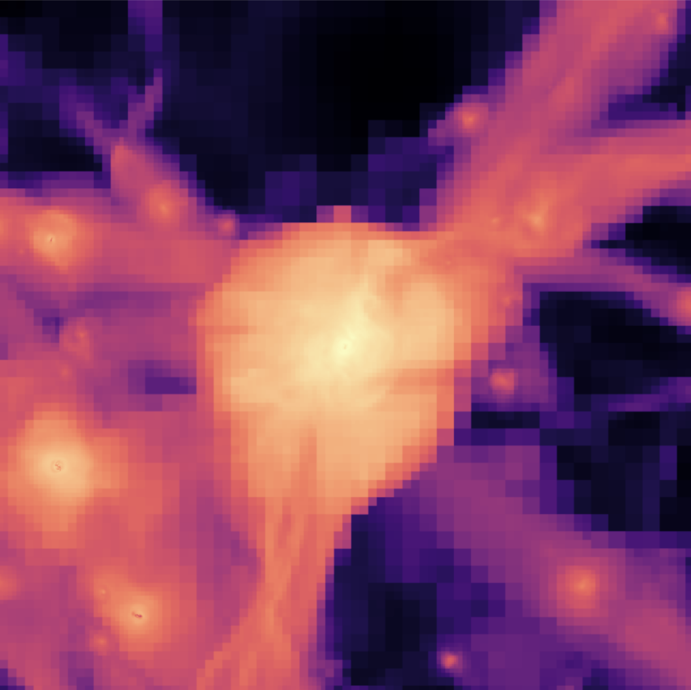

Research
Nature’s most powerful
particle accelerators.
Exploring the origin of ultra-high-energy cosmic rays at the intersection of astrophysics, astroparticle physics, and plasma physics.
The cosmic-ray puzzle
Cosmic rays are energetic nuclei from space. Their energies range from a few hundred MeV to over 200 EeV (2 × 1020 eV). That’s over 30 million times the energy humans have achieved after decades of effort and billions of dollars. And yet, Nature makes 200 EeV cosmic rays routinely. But we don’t know exactly how. The origin of the highest-energy particles remains one of the great puzzles in astrophysics.
The most popular explanations involve either supermassive black holes or neutron stars, the most extreme objects in the Universe. Those are the usual suspects for extreme astrophysics. But I am trying to revive a lesser-known idea: that the largest shocks in the Universe—those associated with large-scale structure formation—accelerate these extreme cosmic rays through the well-established process of diffusive shock acceleration.
A hierarchy of shocks
Building on my Ph.D. research with Roger Blandford, my collaborators and I have developed a hierarchical model in which a series of shocks accelerates cosmic rays in stages—from low energies within galaxies to the highest energies at extragalactic shocks.

Galaxy clusters and the filaments that connect them provide a setting for this work. As matter collapses into these structures, enormous accretion shocks form.
Read our hierarchical shock model ↗Connecting the signals
To test the model, we draw on observations of radio waves, gamma rays, neutrinos, and cosmic rays themselves. These complementary signals help connect particle acceleration to the magnetic fields and plasma that fill cosmic structures.
Research highlight / KIPAC
Nature’s Ultimate Particle Accelerators
A non-technical introduction to how galaxy clusters and filaments may accelerate particles to extraordinary energies.
Read the research highlight ↗Other interests
My interests extend to lower-energy cosmic rays, plasma instabilities, supernova remnants, magnetic turbulence, and the filamentary structure that forms as matter collapses into clusters, filaments, and sheets.
Earlier in my career, I worked briefly in experimental and theoretical particle physics. I remain interested in those fields, as well as quantum foundations.